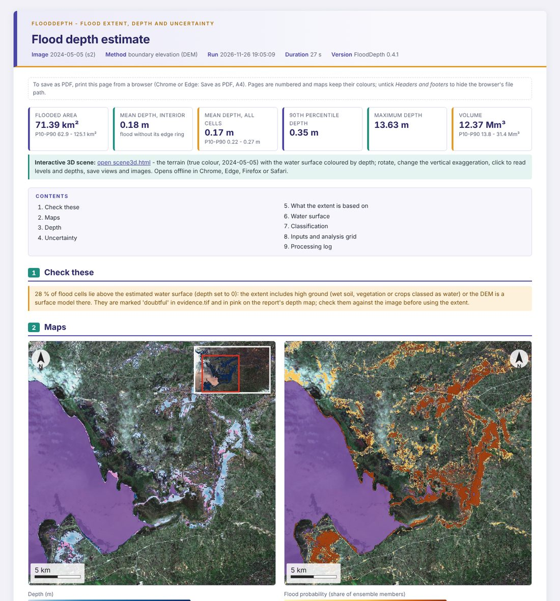
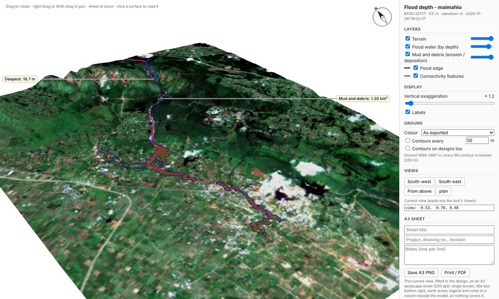
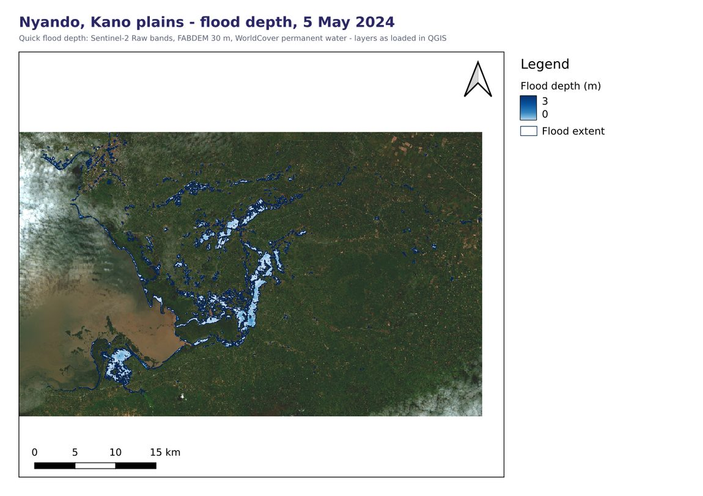
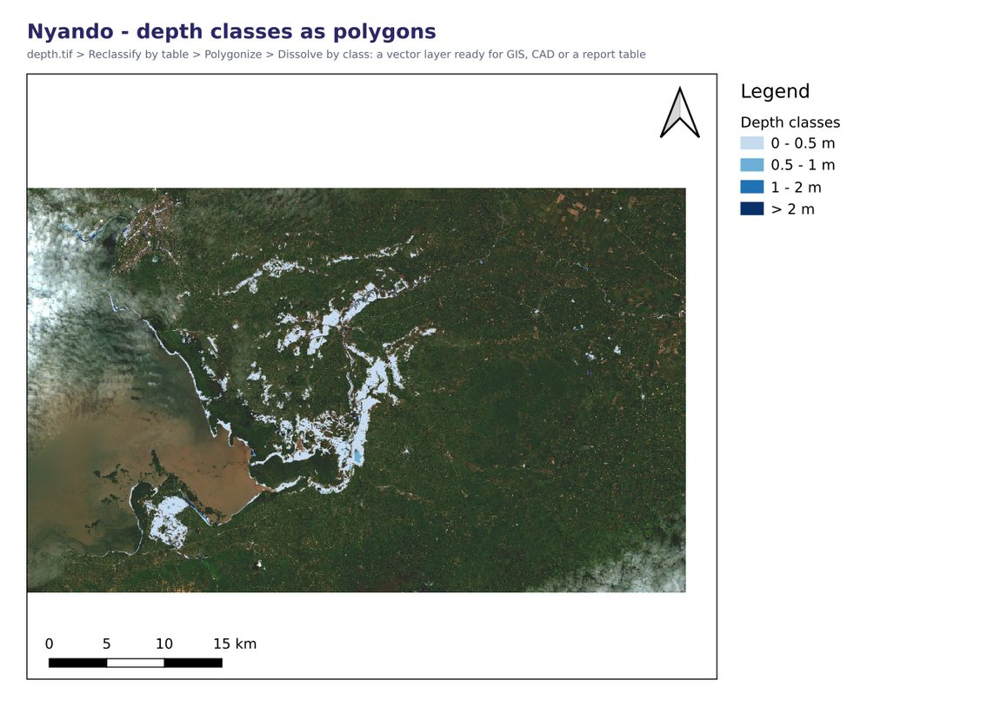
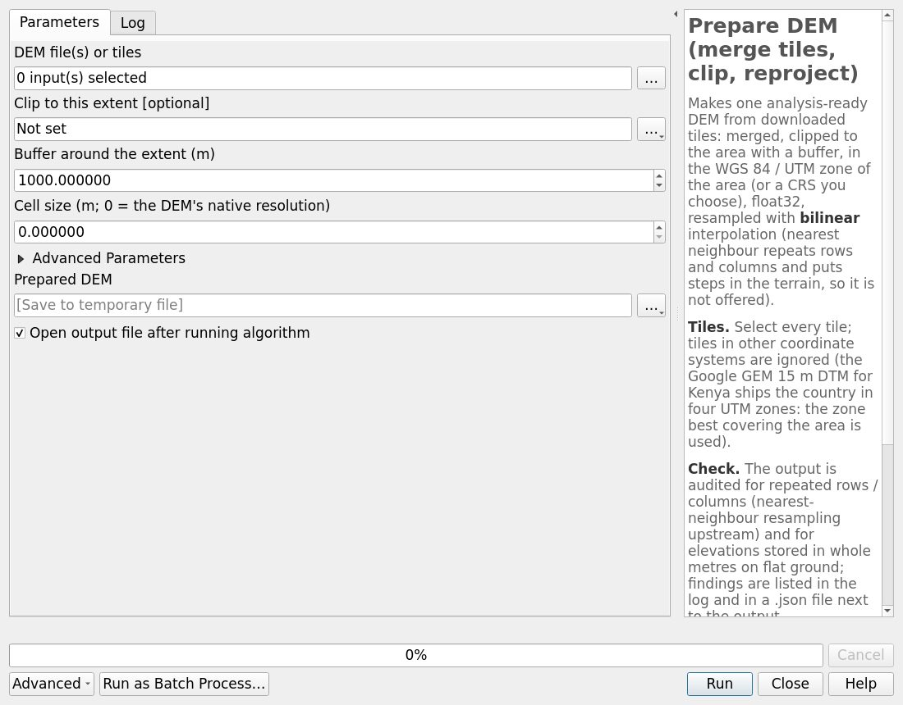
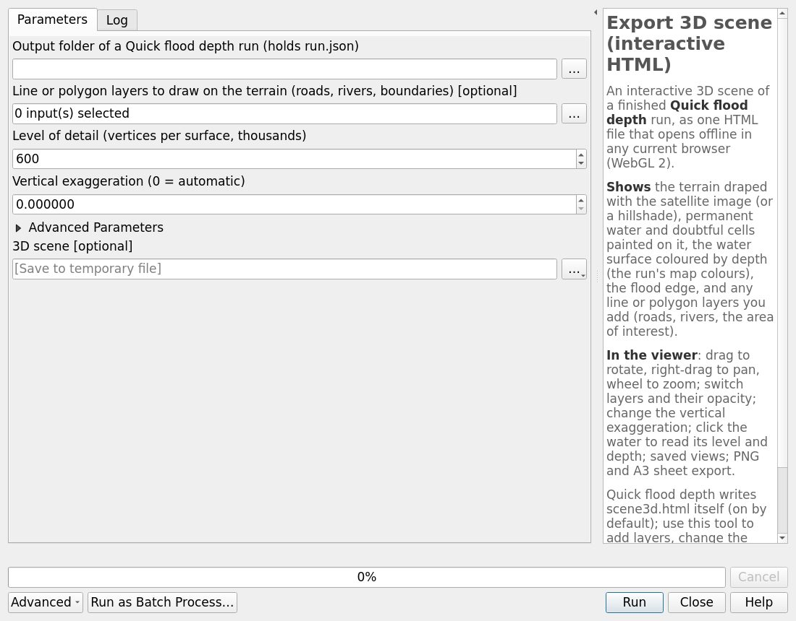
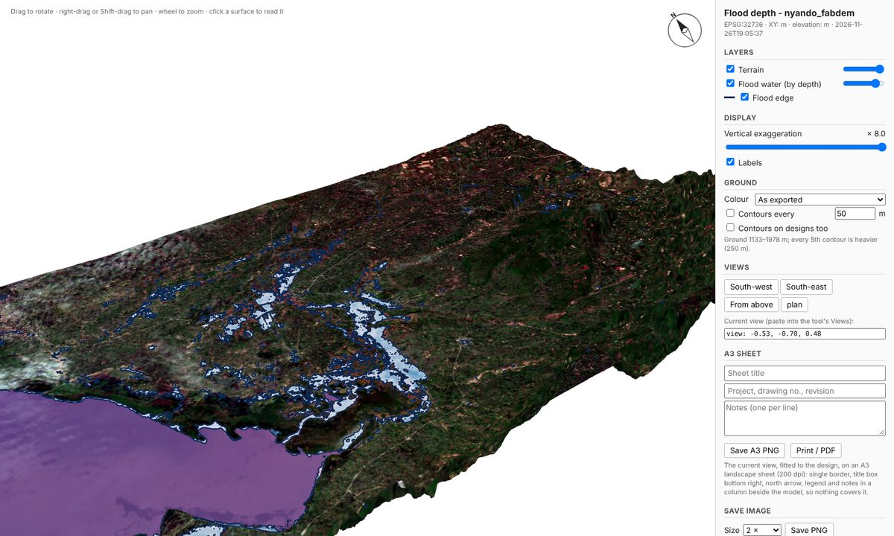
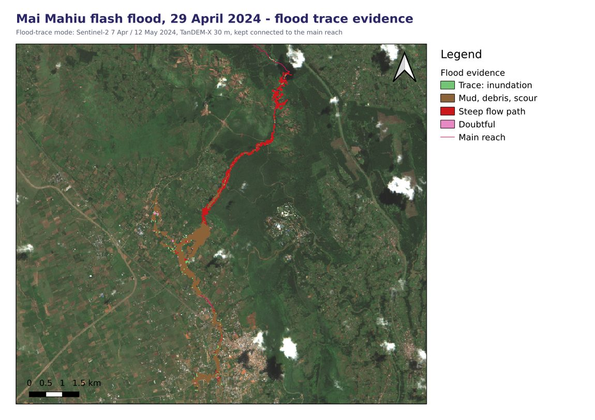
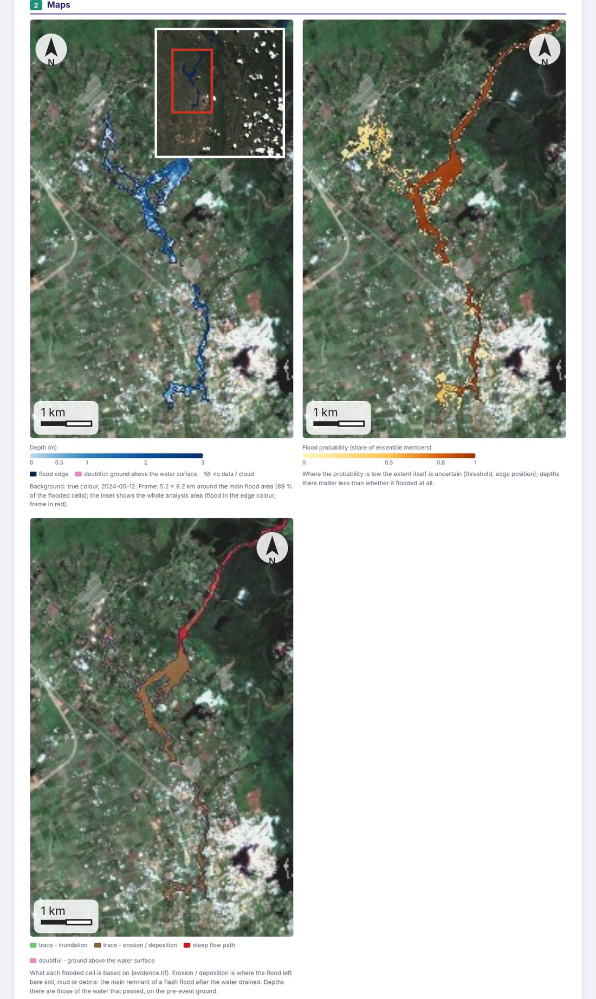
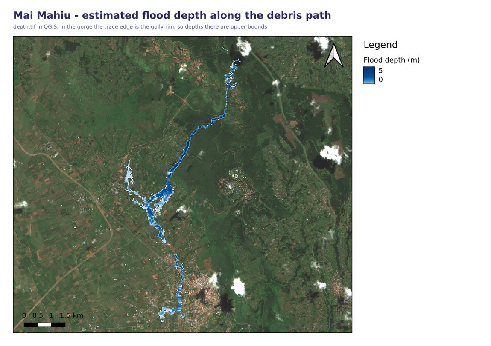

About this guide
Parts A and B take you from installing the plugin to a first depth map and its report. Part C is about what you do with the results afterwards: FloodDepth writes ordinary GeoTIFF rasters and GeoPackage polygons, and those feed exposure counts, depth-class maps, drawings and Google Earth files. Part D covers the other tools, Part E works through two real events from start to finish, and Part F holds the method, validation, limits and checklists. Every tool's Help button opens its own section of this guide, which is installed with the plugin and works offline.
0What FloodDepth does
FloodDepth turns a satellite image of a flood, or a flood-extent layer, and a DEM into a flood-depth map with uncertainty bands, in one run, entirely inside QGIS. It uses only NumPy and the GDAL bindings that QGIS ships. It starts no external program and needs no extra Python package, so it also works on managed workstations.
Part AGetting started
Install the plugin, find its tools, and prepare the image and the DEM it needs.
1Overview and where to find it
| Place | What is there |
|---|---|
| Raster › FloodDepth | Quick Flood Depth, Flood Depth over Time, Prepare DEM, Export 3D Scene, Classify Water from Imagery, Compare Flood Extents and this User Guide. |
| Raster toolbar | One FloodDepth button: a click opens Quick Flood Depth, the arrow lists the other tools and the guide. |
| Processing Toolbox | Every tool under FloodDepth. They run in batch mode, chain in
the Graphical Modeler, log to the Processing history and can be called with processing.run(). |
| Help button | Opens the tool's section of this guide. |
| Toolbox group | Tools |
|---|---|
| Flood depth | Quick flood depth (image or extent + DEM) · Flood depth over time · Export 3D scene |
| DEM preparation | Prepare DEM (merge tiles, clip, reproject) |
| Step by step | 1. Classify water from imagery · 1b. Classify water from training polygons · 2. Water surface and depth from a flood extent · 3. Flood depth from a water-surface raster · Flood depth below a constant water level |
| Validation | Compare flood extents (CSI, hit rate, false alarms) |
2Installing and updating
- Plugins › Manage and Install Plugins, search FloodDepth, Install. Updates arrive the same way.
- Or Install from ZIP with a release zip from the repository.
- QGIS 3.44 or later, including QGIS 4. Nothing else is needed. When SciPy is present (it ships with most QGIS installs) a few steps use it; without it the results are the same.
3Preparing the inputs
The image
Select the files as they were downloaded; do not rename or stack them. Bands are recognised from their names
(_B03_, SR_B3, VV ...) and the band descriptions inside the files.
| Source | Select | Water index |
|---|---|---|
| Copernicus / EO Browser | Download › Analytical, the Raw bands B02, B03, B04, B08, B11 (GeoTIFF) | NDWI + confident MNDWI |
| Sentinel-2 SAFE | the band files of the L2A product | NDWI + confident MNDWI |
| Landsat 8 / 9 C2 | SR_B2 to SR_B6 | NDWI + confident MNDWI |
| Browser "False color" | the rendered composite (it has no SWIR1) | NDWI only |
| Sentinel-1 | VV (and VH): linear, dB or Browser UINT16 | SAR backscatter, 5 × 5 speckle filter |
True-colour pictures and rendered SAR images hold display colours, not reflectance; they are refused with the reason. Clouds are masked using the blue band (B02), so give it.
The pre-event image and permanent water
Water that was there before the flood (lakes, rivers, dams) is not flood. Give a pre-event image of the same area, an ESA WorldCover tile (class 80), a JRC occurrence raster (≥ 50 %) or lake polygons. On a lake shore this is essential: at Nyando, Lake Victoria's Winam Gulf would otherwise count as 279 km² of flood.
Floods that drained before the overpass
Flash floods and debris flows are often gone before the next clear image. Choose Flood trace after the water drained and give a pre-event image: FloodDepth maps the vegetation stripped between the two dates and splits it into inundation (vegetation flattened) and erosion / deposition (bare soil, mud and debris, scour). Section 18 works through such an event.
4DEMs, tiles and the GEM 15 m DTM
The depth is only as good as the DEM under the flood edge. Prefer a bare-earth model (LiDAR, FABDEM, GEM) to a surface model (GLO-30, ALOS, TanDEM-X), where the edge sits on canopy and roofs.
| DEM | Cell | Error used (1σ) | Notes |
|---|---|---|---|
| LiDAR / drone DTM | < 5 m | 0.15 m | best; put "lidar", "drone" or "survey" in the file name for the preset |
| FABDEM | 30 m | 1.5 m | bare earth (forests and buildings removed) |
| Google GEM 15 m DTM | 15 m | 2.0 m | bare earth at twice the resolution of the 30 m products |
| Copernicus GLO-30, TanDEM-X | 30 m | 2.0 m | surface models |
| ALOS AW3D30 | 30 m | 2.5 m | whole metres: flat floodplains are stepped |
| SRTM / NASADEM | 30 m | 4.0 m | older, noisier |
The DEM error is taken from the file name when it names the product; otherwise 2 m is assumed and the report says so. Set DEM vertical error to override it. A geographic (latitude / longitude) DEM is analysed in the WGS 84 / UTM zone of the area.
Tiled DEMs
Give one tile as the DEM and the rest under More DEM tiles, or select every tile. FloodDepth combines them into a virtual mosaic and reads only the cells under the image or area of interest, so a 30 000 × 30 000 tile costs no more than a small clip. Tiles in other coordinate systems are left out, and the report says which.
The Google GEM 15 m DTM for Kenya
- The export ships the whole country four times, once per UTM zone (EPSG 32636, 32637, 32736, 32737), in tiles of up to 32 768 × 32 768 cells. Select the tiles of one zone, or all of them: the zone that covers the area best is used.
- Missing cells (Lake Victoria, some water bodies) are stored as NaN with no NoData value; FloodDepth treats them as NoData.
- At Nyando and Mai Mahiu GEM sits about 3 m above FABDEM (2.8–3.2 m). A uniform offset does not change depths, because the water surface comes from the same DEM.
- In the depth benchmark its error was close to ALOS's and TanDEM-X's at 30 m; its value is the 15 m cell (narrow channels, embankments), at four times the cells per area (section 20).
Part BThe one-click workflow
Quick flood depth runs the whole chain into one output folder: water mask, extent, water surface, depth, uncertainty, report and 3D scene.
5Running Quick flood depth
- Open it from the FloodDepth button, Raster › FloodDepth › Quick Flood Depth, or the Toolbox.
- Satellite image file(s): the post-event bands (or, instead, a flood-extent polygon layer).
- DEM and, for tiled DEMs, More DEM tiles.
- Pre-event image file(s) or a Permanent water raster; for a drained flood, the mode Flood trace.
- Area of interest for a large scene: the image and the DEM are read only around it.
- Output folder, then Run. Depth, extent and evidence load into the map; the report and the 3D scene are in the folder.

Map colours
The report maps, the 3D scene, the loaded depth layer and the evidence.tif palette share the colours set
under Advanced › Map colours: the depth ramp (Blues, Viridis, Yellow-green-blue or Magma; the last three are
colour-blind safe) and the depth at its dark end (3 m by default; lower it for shallow ponding, raise it for valley
floods), and the colours of permanent water , the flood edge
, doubtful cells
and mud and debris . QGIS remembers the last values you used.
6The run report
report.html opens in any browser. To keep a PDF, print it (Chrome or Edge: Save as PDF, A4): the
pages are numbered, the maps keep their colours, and the collapsed sections open for printing.

| Section | Read it for |
|---|---|
| Check these | Warnings about the result: doubtful cells, low separability, steep flow paths, erosion, DEM defects, memory. Read it first. |
| Maps | Depth over the image (pink = doubtful, hatched = NoData or cloud) framed on the main flood with an inset of the whole area; flood probability; and the evidence map (mud and debris in brown). |
| Depth, Uncertainty | Area by depth class; statistics for all flood cells and for the interior (without the edge ring, where depth is about 0 by construction); the ensemble's P10 / P50 / P90 of area, mean depth and volume. |
| What the extent is based on | Area, depth, band width and probability per evidence class. |
| Water surface, Classification | Edge cells used and dropped, edge lift; the index, threshold, separability (eta), cloud share and cleanup. |
| Inputs, Processing log | Files, grid, settings, every step taken and the time by stage. |
7The output folder
| File | Content | Loaded |
|---|---|---|
depth.tif | Flood depth (m), float32, NoData −9999 outside the flood | yes, styled |
flood_extent.gpkg | Layer flood_extent: flood polygons (valid
geometries, area in m²); layer waterline: the edge cells used for the water surface | yes |
evidence.tif | What each flood cell is based on, with a colour table (appendix B) | yes |
wse.tif | Water-surface elevation (m, the DEM's datum); with HAND, the water height above drainage | with Load every output |
depth_p10 / p50 / p90.tif | Ensemble depth percentiles (a dry member counts as 0 m) | as above |
flood_probability.tif | Share of ensemble members flooded (0–1) | as above |
water_mask.tif | The classification on the image grid: 1 flood, 2 permanent, 0 dry | as above |
report.html | The run report (section 6) | |
scene3d.html | The interactive 3D scene (section 8) | |
run.json | Every number and decision of the report, machine-readable |
All rasters share one projected grid (the DEM's lattice, or the local UTM zone for a geographic DEM), so they stack in the Raster Calculator without resampling.
8The 3D scene
scene3d.html is one self-contained file that opens offline in Chrome, Edge, Firefox or Safari. It shows
the terrain draped with the satellite image (or a hillshade when there is no image), with permanent water and doubtful
cells painted on it; the flood water as a surface coloured by depth; mud and debris as their own brown surface in
flood-trace runs; the flood edge; and the connectivity features and area of interest when given.

- Move: drag to rotate, right-drag (or Shift-drag) to pan, the wheel to zoom.
- Layers: switch each surface and line set on or off and set its opacity.
- Vertical exaggeration: chosen from the relief (up to 8× on flat plains); change it with the slider.
- Click the water or the mud to read the position, the level and the depth.
- Views (south-west, south-east, from above, plan), Save PNG and an A3 sheet with title, legend and north arrow.
The terrain is block-averaged so the file stays light (600 000 vertices per surface by default; Nyando at 60 m cells: 4.2 MB; Mai Mahiu at 31 m: 1.1 MB). Switch the scene off in the dialog, or rebuild it with other layers and detail with Export 3D scene (section 16).
Part CWorking with the layers
The report is one product; the rasters and polygons are the others. They are standard GeoTIFF and GeoPackage files that every GIS, CAD and modelling tool reads.
9The layers in QGIS
After a run, Flood depth (m), Flood evidence and Flood extent are in the Layers panel, styled with the run's colours. Tick Load every output to also load the water surface, P10 / P50 / P90, probability and the water mask. Restyle them like any layer (Layer Properties › Symbology); the Identify tool reads depths cell by cell.

10Rasters and polygons for other work
Each recipe uses standard QGIS Processing tools on FloodDepth's outputs. They were run on the Nyando outputs while writing this guide; the numbers and figure 5 are the results.
Depth classes as polygons (for maps, CAD, report tables)
native:reclassifybytable) › Polygonize (gdal:polygonize) ›
Dissolve (native:dissolve)Reclassify depth.tif with the rows 0–0.5 → 1, 0.5–1 → 2, 1–2 → 3, 2–1000 → 4 (range boundaries
min < value ≤ max), polygonize to a field class, dissolve by class. Nyando:
66.6 km² at 0–0.5 m, 2.1 km² at 0.5–1 m, 1.3 km² at 1–2 m and 1.4 km² deeper.

Depth per flood polygon
native:zonalstatisticsfb)Input flood_extent, raster depth.tif, statistics mean, minimum and maximum: each polygon gets
d_mean, d_min, d_max. The flood polygons are valid geometries, so zonal statistics,
clip and dissolve accept them as they are. At Nyando the largest polygon (23.5 km²) has a mean depth of 0.12 m.
Buildings, roads or plots affected
native:rastersampling, points) ·
Extract by location (native:extractbylocation)Run zonal statistics with your building footprints or plots and depth.tif (maximum) and
flood_probability.tif (mean); sample depth.tif and depth_p90.tif at point assets;
extract the roads that intersect flood_extent. Filter on, say, d_max > 0.3 for a
damage count, and report the P90 count next to it.
A threshold mask: where water was deeper than 0.5 m
native:rastercalc)The expression "depth@1" >= 0.5 gives a 0 / 1 raster; polygonize it for a vector. Use
"depth_p90@1" >= 0.5 for a cautious version.
Water-level contours
gdal:contour)Contours of wse.tif at 0.5 m show how the water surface falls along the valley; they are lines of equal
water level, ready for a drawing.
Clip to a boundary, or hand over a smaller file
gdal:cliprasterbymasklayer) · Clip (native:clip)Clip the rasters to a ward, a catchment or a project boundary, and the polygons with the same boundary.
11Exporting: GIS, CAD, Google Earth, PDF
| For | How |
|---|---|
| Shapefile, GeoJSON | Right-click Flood extent › Export › Save Features As, or
native:savefeatures |
| Google Earth (KML) | Save Features As, format KML (written in WGS 84); the depth classes of section 10 give a coloured KML |
| CAD (DXF) | Project › Import/Export › Export Project to DXF with the depth-class polygons and water-level contours |
| Hydraulic models | depth.tif and wse.tif as initial conditions or
calibration targets; flood_extent.gpkg as an observed extent |
| Cloud-optimised GeoTIFF | Translate (gdal:translate), format COG |
| Maps for reports | A QGIS print layout (figures 4, 5, 9 and 11), or print report.html
to PDF |
| 3D views | Save PNG or A3 sheet in scene3d.html |
Part DThe other tools
12Prepare DEM
Makes one analysis-ready DEM from tiles: merged, clipped to an extent with a buffer, reprojected to the WGS 84 / UTM zone of the area (or a CRS you choose) with bilinear or cubic resampling, float32, compressed. A DEM already in the target CRS at the target cell keeps its cells exactly. Use it when the same area is analysed many times, or to share a DEM; Quick flood depth reads tiles directly too.

The output is checked, and the findings go to the log and a .json file beside it: repeated rows or
columns (nearest-neighbour resampling upstream: the copies make steps that the flood-edge levels pick up, so nearest
neighbour is not offered) and whole-metre storage on flat ground (flood-edge levels are rounded to the step).
The same check runs in every Quick flood depth run.
13Flood depth over time
Select the band files of several dates together. They are grouped by the date in their names (YYYY-MM-DD, YYYY_MM_DD or YYYYMMDD); each date runs Quick flood depth in its own sub-folder with the same DEM, permanent water, area of interest and settings. A date with no water left is reported and skipped.
| File | Content |
|---|---|
max_depth.tif | Deepest water seen at each cell on any mapped date |
dates_flooded.tif | Number of dates each cell was flooded |
first_date_flooded.tif | First date flooded (1 = first date; the dates are in the file tags) |
series.html, series.csv | Area, depth and volume per date with P10–P90 bars, charts spaced by time, the maximum-depth map |
14Step-by-step tools
| Tool | Inputs → outputs |
|---|---|
| 1. Classify water from imagery | Image files (water or flood-trace mode) → water mask raster and water polygons |
| 1b. Classify water from training polygons | RGB, drone or aerial image + water and non-water polygons you draw → water mask and polygons, for scenes where the indices fail |
| 2. Water surface and depth from a flood extent | Flood polygons or a mask raster + DEM (or HAND) → water-surface and depth rasters, optionally the waterline points used and dropped |
| 3. Flood depth from a water-surface raster | A known surface (hydraulic model, surveyed flood marks) − DEM → depth |
| Flood depth below a constant water level | A lake or reservoir level, a flood mark, a what-if level → depth |
15Compare flood extents
Scores an extent (raster or polygons) against a reference (a Copernicus EMS product, a surveyed extent, a hydraulic model): critical success index (CSI), hit rate, false-alarm ratio, bias and F1, with an agreement raster (hit, miss, false alarm).
16Export 3D scene
Rebuilds scene3d.html from a finished run's output folder (it reads run.json and the DEM
again), so you can add line or polygon layers (roads, rivers, boundaries), change the level of detail or set the
vertical exaggeration without running the analysis again.

Part EWorked examples
Two real events, run with Quick flood depth at default settings (20-member ensemble). They show behaviour, not accuracy: there are no independent depth measurements for either event.
17Nyando, Kano plains (standing flood)
In early May 2024 the Nyando River flooded the Kano plains and the Ahero and West Kano rice schemes, next to the Winam Gulf of Lake Victoria. The Sentinel-2 overpass of 5 May caught the water standing.
| Input | Used |
|---|---|
| Image | Sentinel-2 L2A, 5 May 2024, Copernicus Browser Raw bands B02, B03, B04, B08, B11 (8-bit with a data-mask band, recognised automatically) |
| DEM | FABDEM 30 m (error preset 1.5 m); repeated with the GEM 15 m DTM |
| Permanent water | ESA WorldCover tile, class 80: 279 km² of the Winam Gulf removed |
| Result | FABDEM 30 m | GEM 15 m |
|---|---|---|
| Index, threshold (eta) | NDWI + confident MNDWI, −0.239 (0.75, good); cloud 10 % | |
| Flooded area (P10–P90) | 71.4 km² (62.9–125.1) | 67.5 km² (55.0–101.9) |
| Mean depth, all / interior | 0.17 / 0.18 m | 0.32 / 0.39 m |
| Interior median, P90 | 0.06, 0.38 m | 0.17, 1.04 m |
| Volume | 12.4 Mm³ | 21.6 Mm³ |
| Method error (cross-validation) | 0.07 m | 0.42 m |
| Evidence | observed water 50.7 km², steep 0.5 km², doubtful 20.3 km² | observed water 42.2 km², steep 3.0 km², doubtful 22.3 km² |
| Run time (2 cores) | 27 s | 36 s |
Reading it. Most of the mapped water is a shallow sheet over the rice schemes and the fringes of the plain; the coherent bodies along the Nyando reach and the south-west plain are 0.5–1.5 m deep. About 28 % of the flood cells are doubtful: mapped as water, but their ground lies above the estimated surface. Most are wet paddies and crops classed as water; the report shows them in pink, and the interior statistics exclude the edge ring. The 15 m GEM DTM resolves the drains and embankments of the schemes, so it finds deeper water in the channels (P90 1.04 m against 0.38 m) and a larger method error. The extreme maximum on GEM (33.7 m) is a single DEM pit; check such cells before quoting a maximum. Given the benchmark (section 20), depths on this flat plain are more likely low than high.

18Mai Mahiu (flash flood, mud and debris)
On 29 April 2024 a flash flood broke through a blocked railway culvert above Mai Mahiu and swept a debris flow down the valley through the settlement. By the next clear image (12 May) the water had gone; what remained was a path of mud, debris and scour. The post-event image shows almost no water, and water mode refuses it with that reason.
| Input | Used |
|---|---|
| Mode | Flood trace after the water drained |
| Images | Sentinel-2 L2A Raw bands, 7 April 2024 (before) and 12 May 2024 (after) |
| DEM | TanDEM-X 30 m (error preset 2.0 m), analysed at 31 m in UTM 37S |
| Connectivity | The main reach of the valley: keeps 11 trace regions, drops 2 132 unrelated changes (crops, cloud) |
| Result | Value |
|---|---|
| Index, threshold (eta) | NDVI change, tile-based Otsu −0.080 (0.51, low: weakly two-class) |
| Trace area (P10–P90) | 1.93 km² (1.2–2.9) |
| Evidence | mud, debris, scour 1.30 km² (67 %); steep flow path 0.51 km²; inundation 0.10 km²; doubtful 0.02 km² |
| Depth of the water that passed, interior | mean 2.05 m, median 1.42 m, P90 4.68 m |
| Method error, edge lift | 1.51 m, 0.48 m |
| Run time | 6 s |


Reading it. Two thirds of the trace is bare soil, mud or fresh sediment: the main remnant of the event, and the report, the evidence layer and the 3D scene (figure 3) show it as such. The depths are those of the water that passed, on the pre-event ground; where the flood scoured or buried the ground the pre-event DEM no longer describes it, so treat them as indicative. The ensemble says so plainly: the trace threshold is weakly constrained (eta 0.51), the method error is 1.5 m, and the bands are widest on the steep flow path. The deepest cells are in the incised gorge, where the trace edge is the gully rim: an upper bound, not a water depth.

Part FTechnical reference
19Method
Water classification
NDWI (green, NIR) marks water; MNDWI (green, SWIR1) adds only its confident part (above max(threshold, 0.3)), which catches turbid water without the wet-soil over-mapping of MNDWI alone. The threshold is an edge-based Otsu (Donchyts et al. 2016) seeded at the physical value (0 for the indices, −16 dB for SAR VV), with a separability score eta; a threshold outside the physically usual range is refused. Small patches are removed and clouds masked from the blue band. In flood-trace mode the index is the NDVI change between the two dates.
Water surface and depth
The waterline is the flood cells next to valid dry ground; edges against NoData, cloud or permanent water are not used. Edge cells whose level departs from their neighbours by more than three robust standard deviations (embankments, canopy) are dropped, except on steep ground. The edge water level is lifted halfway up the step to the first dry cell (cap 1 m). The surface is interpolated by inverse distance from the edge (GDAL FillNodata, run per group of flood clusters) and lightly smoothed; depth = surface − DEM, clipped at 0 (Cohen et al. 2018).
Uncertainty and evidence
Each of 20 members redraws a spatially correlated DEM error (σ from the DEM, correlation 150 m), the threshold within its near-optimal band and the area-fraction cut-off (or shifts the edge for polygons), adds extra terrain error in erosion / deposition cells, and adds the method error estimated by a blocked cross-validation of the waterline. Members run in parallel threads with independent random streams, so the result does not depend on the thread count. The evidence layer classes each flood cell (appendix B).
Full detail and the reasoning behind each choice: DOCUMENTATION.md in the repository.
20Validation
- Classification: all 446 hand-labelled chips of Sen1Floods11 (Bonafilia et al. 2020; 11 flood events), fully automatic: Sentinel-2 CSI 0.74 (F1 0.85, area bias 1.01), Sentinel-1 VV CSI 0.45.
- Depth: known water surfaces imposed on FABDEM, ALOS, TanDEM-X and GLO-30 + HAND at Nyando and Mai Mahiu. The P10–P90 band covers about 77–95 % of the true depths for valley-type floods; on wide flat floodplains the method still underestimates (section 21).
- GEM 15 m DTM (truth on FABDEM, depth on each DEM at 30 m): mean absolute error 1.2–1.4 m at Nyando and 3.8–5.6 m in the Mai Mahiu valley, close to ALOS and TanDEM-X, with the smallest bias of the three at Mai Mahiu.
- Software: 11 test suites without QGIS and a QGIS test that runs every tool through Processing, on QGIS 3.44 and 4.2, on every change.
21Known limitations
- Not a hydraulic model: no flow, velocity, timing, backwater or structures.
- The extent drives everything. Wet soil, crops, shadow or flooded vegetation classed as water raise the surface; water missed by dark-water SAR lowers it. Look at the mask and the doubtful cells before the depths.
- Wide flat floodplains: the edge method still underestimates depth by about 0.5–0.8 m with water 3 m above the drainage, where the water surface follows the drainage across a broad plain.
- Channels: 30 m DEMs smooth channels, so channel depths are too shallow; 15 m and LiDAR DEMs do better.
- Timing: the image shows the water at the overpass, before or after the peak.
- Flood traces mix inundation, scour and deposition; in mud and debris cells the pre-event DEM no longer describes the ground.
22Speed and memory
- Area of interest: the image is read only around it (the area plus half its size each side, for a stable threshold). Nyando with a 30 % × 30 % area: 37 s → 14 s.
- Windowed reads: DEMs, tiles and rasters are read only where the analysis grid lies.
- The ensemble is the longest stage (about 80 % of a run). Use 10 members for a first look; members run in
parallel on all but one CPU core (
FLOODDEPTH_THREADSsets the number). - Memory: before the DEM is read the run's needs are estimated (about 64 bytes per analysis cell): a warning above half the free memory, a stop with advice above 90 %. A larger cell size or an area of interest lowers it.
23Quality-control checklist
- Read Check these in the report.
- Compare the water mask with the image: is the extent water, or wet soil, crops, shadow or cloud?
- Separability (eta) of 0.65 or more; below that, try an area of interest or a manual threshold.
- Permanent water removed (lakes, rivers, dams)?
- Doubtful share: a large share means the extent includes high ground; trust the interior statistics more.
- DEM: bare earth or surface model? Any DEM warning (repeated rows, whole metres)?
- Uncertainty: report P10–P90 with every number; a wide band on a cell means its depth is weak evidence.
- Flood trace: depths in mud and debris cells are indicative; maxima in gorges are upper bounds.
- Look at the 3D scene: does the water surface sit sensibly in the valley?
24Troubleshooting
| Message | What to do |
|---|---|
| Could not find the bands for an automatic water index | Give the Raw bands (green, NIR, SWIR1), not a rendered picture; or set the band numbers of a multiband file. |
| The automatic threshold is outside the range | The image probably shows little or no water (drained flood: use flood-trace mode), or cloud and shadow dominate. Set a manual threshold only if you are sure. |
| No water was found | As above; check the date and the bands. |
| Only n waterline cells were found | The flood does not border dry ground with valid terrain: the DEM does not cover around the flood, or the extent is clipped at the image edge. |
| The analysis grid ... needs about n GB | Give an area of interest or a larger cell size. |
| ... does not overlap the analysis area | The DEM and the image cover different places; check both CRSs. |
| The 3D scene could not be written | The run itself is complete; rebuild the scene with Export 3D scene and a lower level of detail. |
AppendicesReference tables
AParameter reference (Quick flood depth)
| Parameter | Default | Meaning |
|---|---|---|
| IMAGES | Post-event image file(s) | |
| EXTENT | Flood-extent polygons instead of an image | |
| DEM, DEM_TILES | The DEM; more tiles mosaicked with it | |
| PRE_IMAGES | Pre-event image (permanent water; required for flood trace) | |
| MODE | water | Water at the overpass, or flood trace |
| AOI | Area of interest | |
| PERM_RASTER, PERM_POLYS, PERM_VALUES | auto | Permanent water; raster values (auto, 80, >=50 ...) |
| SEEDS, SEED_BUFFER | 30 m | Keep flooding connected to these features |
| METHOD, HAND | DEM | Flood-edge elevation (FwDET) or height on a HAND raster |
| MEMBERS | 20 | Ensemble members (0 = off) |
| DEM_SIGMA, CORR | 0 (from name), 150 m | DEM error and its correlation length |
| SCENE3D | on | Write scene3d.html |
| INDEX, THRESHOLD, TMETHOD | auto, empty, edge | Water index, manual threshold, threshold method |
| B_GREEN … B_BLUE | 0 | Band numbers in an unnamed multiband file |
| MIN_WATER, MAX_HOLE | 10, 0 cells | Remove small patches; fill dry holes |
| CLOUD | 0.25 | Bright-cloud blue reflectance limit |
| CELL | 0 (DEM) | Analysis cell size |
| INTERP, SMOOTH, SMOOTH_TOL | IDW, 2, 0.5 m | Surface interpolation and smoothing |
| EDGE_STEP, EDGE_CAP | 0.5, 1 m | Edge water level within the step to the first dry cell |
| OUT_RADIUS, OUT_K, OUT_MIN | 10, 3, 0.5 m | Edge outlier screen |
| STEEP | 10 % | Steep ground: flow path, not ponding |
| ERO_SIGMA | 1 m | Extra terrain error in erosion / deposition cells |
| RNG_SEED | 42 | Random seed |
| DEPTH_RAMP, DEPTH_MAX | Blues, 3 m | Depth colours |
| COL_PERM, COL_EDGE, COL_DOUBT, COL_MUD | Permanent water, flood edge, doubtful, mud and debris colours | |
| LOAD_ALL | off | Load every output |
| OUT_DIR | Output folder |
From the Python console:
processing.run("flooddepth:quickflooddepth", {"IMAGES": ["B02.tif", "B03.tif", "B04.tif", "B08.tif", "B11.tif"],
"DEM": "fabdem.tif", "PERM_RASTER": "worldcover.tif", "OUT_DIR": "C:/floods/nyando"})
BOutput values and fields
| Layer | Value / field | Meaning |
|---|---|---|
evidence.tif | 0 | extent from polygons |
| 1 | observed water at the overpass | |
| 2 | trace – inundation (vegetation flattened, still vegetated) | |
| 3 | trace – erosion / deposition: mud, debris, scour (the DEM may be outdated there) | |
| 4 | steep flow path (slope > 10 %): water flowed, did not pond | |
| 5 | doubtful: ground above the estimated water surface (depth 0) | |
| 255 | NoData | |
water_mask.tif | 0 / 1 / 2 / 255 | dry / flood water / permanent water / NoData |
| Float rasters | −9999 | NoData (outside the flood, or no data) |
flood_extent | area_m2 | polygon area (m²) |
| source | image or polygons | |
waterline | used | 1 used for the surface, 0 dropped as an outlier |
| z | ground level of the edge cell (m) | |
| surface | water level assigned to it (m) |
CReferences
- Bonafilia, D., Tellman, B., Anderson, T. and Issenberg, E. (2020). Sen1Floods11: a georeferenced dataset to train and test deep learning flood algorithms for Sentinel-1. CVPR Workshops.
- Cohen, S. et al. (2018). Estimating floodwater depths from flood inundation maps and topography. Journal of the American Water Resources Association 54(4).
- Donchyts, G. et al. (2016). A 30 m resolution surface water mask including estimation of positional and thematic differences using Landsat 8, SRTM and OpenStreetMap. Remote Sensing 8(5).
- Hawker, L. et al. (2022). A 30 m global map of elevation with forests and buildings removed. Environmental Research Letters 17.
- McFeeters, S. K. (1996). The use of the Normalized Difference Water Index (NDWI) in the delineation of open water features. International Journal of Remote Sensing 17(7).
- Nobre, A. D. et al. (2011). Height Above the Nearest Drainage – a hydrologically relevant new terrain model. Journal of Hydrology 404.
- Otsu, N. (1979). A threshold selection method from gray-level histograms. IEEE Transactions on Systems, Man, and Cybernetics 9(1).
- Xu, H. (2006). Modification of normalised difference water index (NDWI) to enhance open water features in remotely sensed imagery. International Journal of Remote Sensing 27(14).